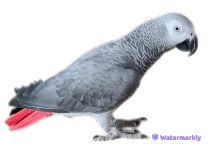

Hélène, passionnée de programmation, était constamment interrompue par son perroquet gris, Max, lors de sa formation à la Wild Code School, dérangeant les sessions en ligne avec ses cris stridents.
Investissant dans un studio insonorisé, Hélène espérait résoudre le problème, mais Max trouvait toujours un moyen de faire entendre sa voix aux moments cruciaux.

Avec le temps, Max s'est finalement apaisé, permettant à Hélène de se concentrer pleinement sur son apprentissage.
Cette histoire illustre comment la persévérance peut triompher des obstacles, même les plus bruyants.
Elle est devenue une développeuse talentueuse tout en maintenant son précieux perroquet à ses côtés.
Cependant, sa détermination à réussir dans le domaine de la programmation restait inébranlable.